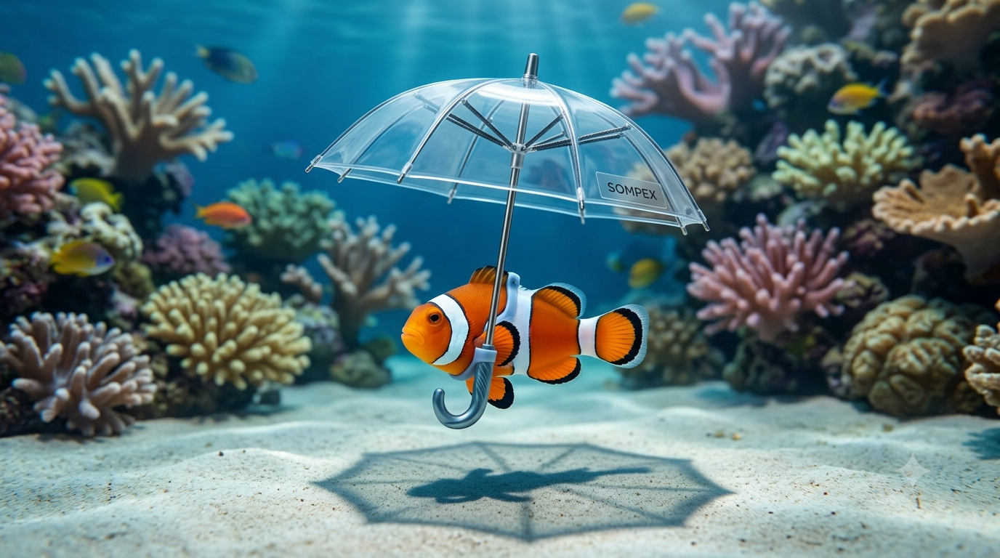
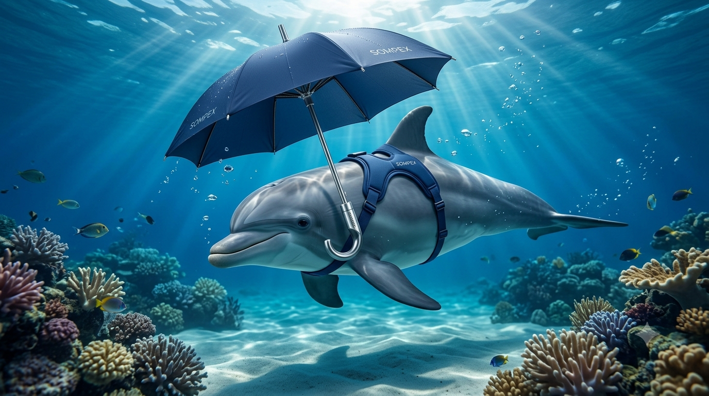
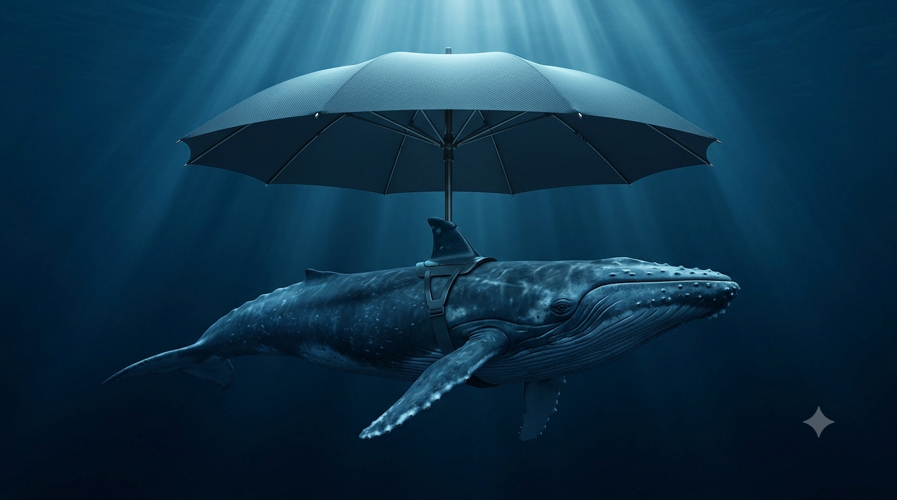

Sombrillas premium para peces, delfines y ballenas
Porque el sol brilla para todos, incluso bajo el agua. Protege a tus amigos marinos con estilo.
Ver Catálogo SubmarinoNuestra Colección Submarina
Diseños adaptados a cada anatomía marina.

Modelo Delfín

Modelo Ballena
¿Por qué tu pez necesita una sombrilla?
- Protección UV: Evita el exceso de luz en sus siestas flotantes.
- Estilo único: Serán la envidia de todo el arrecife de coral.
- Material eco-amigable: Hechas con plástico reciclado del océano.
Lo que dicen nuestros clientes marinos
"¡Por fin puedo nadar de espaldas sin que el sol me deslumbre! El modelo Splash cambió mi vida."
— Flipper, Delfín Austral